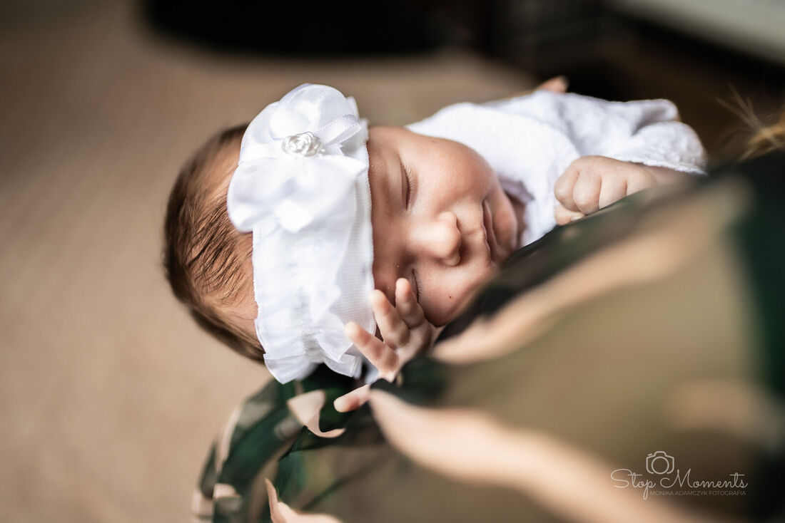
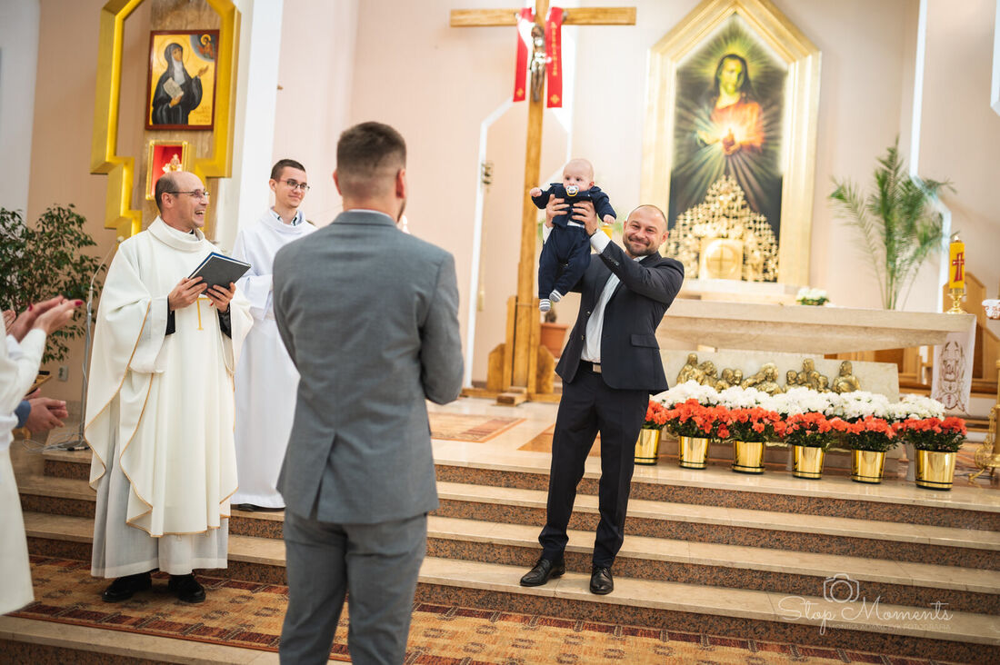

Kilka rzeczy, które ustalone tydzień wcześniej sprawiają, że w dniu chrztu nikt nie musi się niczym przejmować.
Chrzest różni się od wesela jedną rzeczą: trwa krótko. Ceremonia to zwykle dwadzieścia minut, przyjęcie kilka godzin, a najważniejsze kadry powstają w kilku pojedynczych momentach, których nie da się powtórzyć. Dlatego kilka ustaleń zrobionych wcześniej zmienia bardzo dużo.
Zapytajcie księdza, gdzie można stanąć
To pytanie brzmi banalnie, a jest najważniejsze z całej listy. W jednych parafiach fotograf może podejść do chrzcielnicy, w innych musi zostać w nawie. Bywają kościoły, w których nie wolno używać lampy błyskowej — co akurat mi nie przeszkadza, bo i tak jej nie używam, ale wpływa na to, jak ustawiam się względem okien.
Wystarczy jedno zdanie przy ustalaniu terminu. Jeśli wiem wcześniej, jakie są zasady, przychodzę przygotowana i nikt nie musi niczego korygować w trakcie.
Godzina ma znaczenie większe, niż się wydaje
Chrzty odbywają się najczęściej w południe albo wczesnym popołudniem. W kościołach z dużymi oknami to dobra pora — światło wpada bokiem i miękko modeluje twarze. Gorzej bywa późnym popołudniem zimą, kiedy w świątyni robi się ciemno i zostaje tylko sztuczne oświetlenie, zwykle o żółtym odcieniu.
Nie zawsze da się wybrać godzinę, bo parafia ma swój porządek. Ale jeśli macie wybór między jedenastą a piętnastą w listopadzie, warto wiedzieć, że pierwsza opcja da ładniejsze zdjęcia.

Zdjęcia rodzinne zaraz po ceremonii
To moment, w którym cała rodzina jest w jednym miejscu, elegancko ubrana i jeszcze nierozproszona. Piętnaście minut przy ołtarzu albo przed kościołem wystarcza, żeby zrobić komplet: rodzice z dzieckiem, chrzestni, dziadkowie, rodzeństwo, wszyscy razem.
Warto uprzedzić gości, żeby nie rozjeżdżali się od razu do samochodów. Zbieranie ludzi z powrotem trwa dłużej niż samo fotografowanie.
Dla wielu rodzin chrzest to pierwsze spotkanie w takim komplecie od czasu wesela, a następne bywa dopiero za kilka lat.
Na przyjęciu nie trzeba nic organizować
Podczas przyjęcia pracuję z boku. Nie proszę o powtórzenie toastu, nie ustawiam gości do zdjęć co pół godziny, nie przerywam rozmów. Chodzę po sali i fotografuję to, co dzieje się samo — dziecko przekazywane z rąk do rąk, babcię wpatrzoną w wnuka, kuzynów pod stołem.
- nie trzeba mnie zapraszać do stołu ani planować dla mnie miejsca w programie
- warto wskazać osoby, na których szczególnie Wam zależy — na przykład prababcię, która rzadko bywa na uroczystościach
- tort i moment przekazania prezentów to jedyne rzeczy, o których dobrze wiedzieć wcześniej, żeby być wtedy w odpowiednim miejscu
Co dostajecie po chrzcie
Zdjęcia trafiają do prywatnej galerii internetowej zabezpieczonej kodem PIN. Link i kod przekazujecie rodzinie i chrzestnym — każdy pobiera sobie pliki w pełnej rozdzielczości, bez zakładania konta i bez proszenia Was o przesyłanie czegokolwiek przez komunikatory.
Interesuje Was ta usługa?
Zobacz pakiety reportażu z chrztu